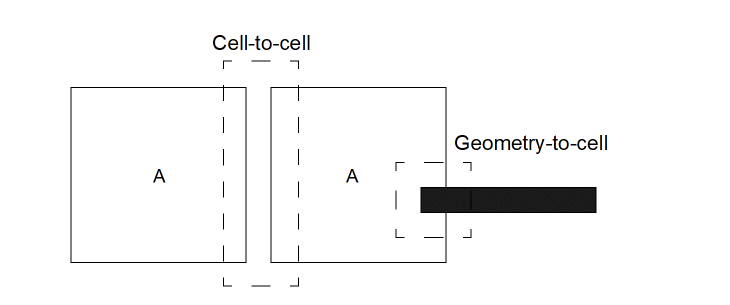

7
DRC Overview
DRC lets you verify that your layout conforms to the technology design rules. You can perform checks ranging from single layer, single dimension checks to multilayer, multidimensional checks. DRC accepts polygonal and edge data at all angles, and does not limit the type, amount, configuration of data, or the number of rules being checked.
The result of any DRC command either generates an error or creates a derived layer. You can use a derived layer as input for other Diva verification commands.
Modes of Operation
Three of the modes, called “check modes,” are as follows:
The other three modes, called "check limits,” are as follows:
You can specify check modes and limits using menu, SKILL, and UNIX commands. You can specify only one check mode and one check limit per run. You cannot use area check mode with a hierarchical check limit.
Full
In full mode, DRC verifies the entire circuit, regardless of changes made since the last time the circuit was verified.
A full, flat run of DRC should be performed before the design is sent for fabrication. The other modes and limits can be used to quickly check for most errors, but only the full, flat run can be relied on to find all errors in the design.
Incremental
In incremental mode, DRC verifies only those areas of the circuit that were modified since the last time the circuit was verified. The first verification run on a circuit is always performed in full mode even if incremental mode is specified. Everything in the circuit is now considered “new,” meaning the entire circuit has changed.
Changes to the circuit or design rules drive incremental processing. These changes are recorded in the circuit database via shapes on a special layer (changedLayer). Before any DRC is run, the flag that enables the generation of shapes on the changedLayer is not set. This same flag is used to determine if full mode is used when incremental is chosen. The changedLayer shapes are removed in any area that DRC processes. A run in full mode will remove all changedLayer shapes.
During checks, DRC extends changed areas to ensure that all design rules are considered. DRC joins separate but nearby changed areas into single changed areas, which might result in redundant checks of unchanged areas. If you change the DRC commands between runs, the complete circuit is verified regardless of the changed areas.
If a cell is changed, a change layer is generated in that cell. If the cell is verified as the master cell, that changed layer is utilized and eliminated. However, if you use that cell later in a previously verified design, Diva detects that the cell has changed, and creates a changed layer shape to completely encompass the cell. Therefore, incremental processing on the previously verified design will behave correctly.
The only exception to the automatic detection of changed cells is for pcells. A new set of layout data is created every time a pcell is loaded. Therefore, the data in the pcell is always different. Diva cannot detect when a pcell has changed contents and needs to be re-checked. To avoid having every pcell rechecked when incremental checking is invoked after loading a design, Diva does not attempt to generate a changedLayer for pcells as they are loaded. Because pcell changes rarely occur, and can be detected through full flat or hierarchical checking, this limitation has minor impact.
Area
In area mode, DRC checks only the area of the circuit that you define. You can define the area with menu commands or with the run-specific verifyArea command. If you use menu commands, only a single rectangular area can be defined. If you use the verifyArea command, the area can consist of multiple rectangles, and you can specify areas within the rectangles that you do not want DRC to check.
Flat
In flat mode, DRC does not consider the hierarchy of the layout and verifies the circuit as if it was a single cell. DRC expands all instances of all cells into their parent cells up to the master (top-level) cell.
Hierarchical Without Optimization
In hierarchical mode, DRC considers the hierarchy of the layout during verification. Hierarchical mode can reduce run-times for designs that have several cell repetitions and few intercell interactions throughout the hierarchy. A design with little repetition or many inter-cell interactions might run slower in hierarchical mode. For very large designs, hierarchical mode can allow DRC to run to completion where it might otherwise fail due to resource limits with the flat limit.
This methodology is efficient as long as the layout methodology of the circuit is simple. Any circuit that has a high degree of cell interaction or shapes that overlap cells will not be processed efficiently. The design rule dimension values are considered to prevent relationships from being overlooked.
DRC methodology is as follows:
-
DRC computes a halo value based on the DRC rules. The halo value is the distance that DRC needs to look outside the area being checked to ensure that all violations are discovered. Conceptually, the halo is the largest design rule. If you consider the rules
a = geomSize ( M 5 ) drc ( a sep < 5 )
you might find that the true halo distance is 15, not 5. It is possible for compound checks to have additive distances. In another example, consider the rulesa = drc ( M sep < 3 ) drc ( a b sep < 4 )
that have a halo of 7. - DRC flattens “small” cells into their parent cells. A cell is considered “small” if both its width and length are less than twice the halo distance.
-
DRC computes two types of interaction areas: cell-to-cell and geometry-to-cell. A cell-to-cell interaction is when two cells overlap within the halo distance. A geometry-to-cell interaction is when a piece of geometry overlaps a cell within the halo distance.
Typical Interaction Areas
 - DRC processes the geometry of each cell. Geometries from other cells and from higher levels in the hierarchy are not considered. Some errors discovered in this phase can be false errors if the circumstances that cause the error are corrected at a higher level of the hierarchy.
-
DRC processes all interaction areas. All data involved in the interaction area is considered. It is possible that an error detected within a cell will also be detected when processing the interaction areas. No attempt to remove these duplicate errors is made.
Errors that are detected within a cell are reported within that cell. Errors that involve interactions are written to the cell where the interaction occurs.
Hierarchical with Optimization
Hierarchical with Optimization mode utilizes a pattern recognition feature. Before processing all the interaction areas, DRC identifies unique cell-to-cell interactions by considering cell names, their relative placement, and their relative orientation. Unique interactions are then processed once. The remaining instances of the same interaction are ignored.
When processing the unique interactions, hierarchical optimized mode does not remove errors detected in previous steps of hierarchical DRC. A fundamental assumption of hierarchical optimized mode is that interaction areas do not differ. This assumption can give misleading results as shown in the “DRC Limitations”.
Pattern recognition is usually applied when you have regular arrays. DRC first checks the periphery cells, along with their adjacent cells, then looks at the relationships between blocks of adjacent cells. DRC can then define all possible relationships between cells that are repeated throughout the hierarchy.
Hierarchical with Optimization should only be used for designs where geometries are not likely to be involved in the cell to cell interaction regions. Standard cell designs with long rows of cells that butt with the interconnect geometries running above and below the cell row are a good example.
Area Halo Processing
During area processing, Diva calculates a “halo” distance around the area to capture all interactions that might impact the correctness of the processing. This halo is based on the maximum distance that can cause interactions or relationships as defined by the dimensions in the design rules.
The area processing can be turned on in three places.
- The UNIX ivVerify command -area option
- The SKILL ivDRC command ?area option
- The run-specific file verifyArea command
In some cases, the halo value can be extremely high and therefore slow down the processing significantly. If you determine that the halo processing is unnecessary, you can switch it off.
The area processing halo value can be forced to zero by turning the zero halo option on in these ways:
- The UNIX ivVerify command -z option
- The SKILL drcZeroHalo command used either in the run-specific file or in the .cdsinit file
Placing the drcZeroHalo command in the .cdsinit file sets the mode for the duration of the interactive session. Used in a run-specific file, this command sets the mode for a single Diva verification run.
DRC Limitations
These sections describe the DRC limitations for hierarchical mode, as well as limitations for incremental and area modes.
Hierarchical Mode
Running DRC in hierarchical mode does not always generate the same results as flat mode when using select, separation/notch, apposition and length, or for any nodal checks. The results are different because checking is done in a local area and select, separations/notch, appositions, lengths, and nodal checks require a global view.
Unlike the hierarchical without optimization mode, the optimized mode does not consider all the data in an interaction area. Instead, optimized mode processes only the data from both cells in the cell-to-cell interaction. Data from lower level and higher level cells are not included. Because only unique cell-to-cell interactions are processed, the data might not be included.
For example, two cell-to-cell interactions occur with four placements of A. Cell A contains only a single area of metal. Two of the cell A placements are completely covered by metal. The other two placements do not have any metal geometry near them.
The top two placements of A form one cell-to-cell interaction, and the bottom two form another. Since the interactions are the same in terms of relative placement and orientation, they share the same unique relationship. The A-to-A interactions cause a metal separation violation. If the top interaction contains an error and is the interaction that DRC processes (the choice is arbitrary), a separation violation is reported for that interaction only. This is misleading because the interaction, in context with the metal overlapping the top two cells, implies that no error occurs. Actually, an error does occur in the interaction with the bottom two cells, but the error is reported in the top two cells that are interacting. DRC uses this method to make sure that all real errors are located.
Select
Relational selection commands, such as geomInside, geomStraddle, and geomOverlap might differ when a limit option is used. For example, a geomOverlap command might try to select metal that has more than two contacts on it.
The metal within the interaction area contains only one contact.
Separation/Notch
Separation and notch checks might not be accurate, because only one interaction area is processed at a time. It might not be possible to distinguish whether two polygons belong to the same shape.
In the dashed-line interaction area there are two unjoined polygons that indicate a separation violation might occur, rather than a notch violation. Because the two polygons belong to the same shape, a notch violation should have been detected.
DRC Area
In the separation and notch diagram, the drc area is calculated for only the two parts of the shape intersecting the interaction area. The remaining parts of the shape are not measured. For all shapes composed of multiple parts, any parts outside the interaction area are not included in the calculation of drc area.
Apposition and Length
Several polygons from different cells can be abutted to form a long edge. You can select a polygon based on the length of an edge with geomGetLength. Unlike flat mode, unless the interaction area covers the entire edge, the polygon cannot be selected.
In this example, two A cells abut to form the long, narrow figure. The interaction area (shown with a dashed line) covers only part of the polygon. The length check sees only part of the long, narrow figure.
Note that large apposition checks have the same problem because the entire apposition area might not be included in the interaction area.
Nodal checks
Many of the relational selection operations contain “connection” options, where you specify sameNet or diffNet values. If you consider a geomOverlap command using the connection “sameNet” option, DRC might not see the entire net in the interaction area and therefore generates different results than it would in flat mode.
Saving Derived Layers
When you run DRC hierarchically, it processes each cell independently and then processes the interaction areas cell-to-cell and cell-to-polygon. Each of these processes implies a pass through the rules.
All commands in the rules including saveDerived are therefore executed multiple times by Diva. As a result, the saveDerived command might produce unintended results. During the processing of the interaction areas, the command only processes data in those areas and the results go in the parent cell.
This is not a problem if you intend the saved data to flag an error condition (for example, badcon = contact andNot metal). However, you do not necessarily obtain meaningful results if you intend to generate new layers or replace existing layers.
If you use the currentCell switch name to limit the scope of the command (refer to the Simulation and Environment Control chapter), data is saved only during the internal processing of each cell. Data is not saved when Diva processes interaction areas.
How DRC Performs Checks
DRC performs checks on pairs of edges. Every edge has an inside and an outside relative to the polygon that it was derived from. Each check relates these edges in a different way. For example, width is an inside edge to an inside edge of the same polygon, and ovlp is an inside edge to an inside edge of different polygons.
DRC checks between edges depending on their positions to each other, relative to their insides and outsides. It also depends on the check being performed. The following figure illustrates the relationships for a sep (separation) rule that checks outside-to-outside edge spacing of separate polygons.
The following figure shows how DRC checks between two edges. DRC builds a region around each edge based on the check dimension. Any part of the other edge that intersects that region is in error. DRC creates the default error region for a check as a quadrilateral built from the edges in error.
The measurements between edges are triggered by the end points of the edges. Be careful when you write rules that involve distance checks. For example, consider an enclosure check that flags violations from inside edge to outside edge.
The example on the left flags violations, while the example on the right does not. No distance violation occurs from any of the metal or contact endpoints.
You can use the result of a logical operation as input to the enclosure check.
The resultant figure from the geomAnd command has edge endpoints that trigger DRC violations.
Normally, DRC does not check adjacent edges (two edges that meet at a single point in a polygon) because their end points touch. This is not true for width and notch checks where DRC checks adjacent edges if the angle between them is less than 90 degrees.
This difference can be eliminated if you specify a lower dimensional limit of greater than 0. For example,
drc( metal 0 < notch < 3 )
The lower limit specifies that a spacing of 0 between edges is acceptable. The point where the edges meet does not trigger a check. However, the other end points of the edges might possibly trigger a check.
Angled Edge Tolerance
Angled edges are treated differently when doing normal spacing and width checks. If you draw a path in a layout with a defined width, that path does not have exactly the width you defined because the editor can only put the endpoints of the path edges on a finite integer grid. For example, if you create a path with a width of 1 micron, the edges are 1.4142 microns apart along both the X and Y axes. This means the path outline might have a width slightly less or slightly greater than 1 micron depending on the size of the layout grid you are using and the angles of the corners of the path.
If DRC checked for an exact dimension on angled edges, these paths might be flagged as errors. For example, if on a 1000 dbu per micron grid you create a horizontal path with a width of 1 micron that turns 45 degrees, the resulting width is 0.99985 microns. An exact DRC width check for 1 micron flags this an error.
To avoid this situation, DRC automatically introduces a very small tolerance into angled edge checks. The tolerance is always biased in the direction of not producing an error. However, if you use a DRC check that includes an “=” operator (for example, 1 <= sep <= 2), the tolerance is removed and checks are made to exact dimensions.
Looking Through the Wall
DRC checks are normally considered as acting between polygons. However, the DRC program actually considers edge relationships. For example, a spacing check is considered the separation between the outside of one edge and the outside of another edge, where “outside” refers to the polygon from which the edge was taken.
An enclosure check measures the spacing between the outside edge of one polygon and the inside edge of another polygon. For enclosure checks, you might normally think of one polygon nested inside another. However, the check can apply to any polygon configuration. Consider the following diagram, which illustrates the many possibilities for an enclosure check.
Example B is the configuration you might normally consider for enclosure. Example C can also be accepted as normal usage. However, examples A, D, and E show the enclosure measurement going through another edge. This is commonly referred to as “looking through the wall.”
Whether examples A, D and E are correct depends upon what you want. For example, the following external spacing configuration is not normally what you want and Diva does not normally generate errors for it (depending on the exact configuration).
This is a situation where the edge you are “looking through” is adjacent to the edge being checked. Configurations C and D are not of this form and the program, by default, always checks them. You have further capabilities for checking these situations using the DRC shielded modifier, which specifies whether the program can “look through walls” and in what manner it should do so.
You can also control “looking through walls” by using the various edge selection and processing commands to derive only those edges or shapes you want checked. In the case of examples A through E, the operation of selecting edges of the enclosed layer inside the enclosing layer eliminates any edges that cause the “looking through the wall” condition.
Check Conjunction
In DRC, derived layers are used to facilitate complex checks. Each design rule check is a separate check generating output. You can direct that output to the error layer or to a derived layer. When output to a derived layer, the output can be edges or polygons, and behaves like any other derived layer.
For input, each check uses an original graphics layer, a derived layer, or the output of another DRC check. In this way DRC achieves “check conjunction” by passing data from check to check through intermediate layers.
For example, the check shown validates metal spacing in the presence of polysilicon that is within one micron of either side of one of the metal edges (single reflection). The first two steps find the metal edges that are close to polysilicon edges. The third step checks the metal separation using both of the previously extracted metal edges. You can apply this concept of check conjunction to double and triple reflections with a minimal number of steps.
ref1 = drc( poly metal enc < 1 parallel edgeb )
ref2 = drc( metal poly enc < 1 parallel edgea )
drc( metal geomCat( ref1 ref2 ) sep < 3 opposite )
Alignment and Registration
There are three main methodologies for checking the separation of shapes in a layout. These methodologies can be simulated individually to some degree using existing checks. The intent of alignment and registration modifiers is to provide the flexibility of using combinations of these methodologies in a single check, without the overhead in processing time associated with the existing methods.
The three methodologies are associated with the process requirements for separation, alignment, and registration, although the checking performed might not necessarily relate directly to the process characteristics these names reference. It is up to you to determine which methodology or combination of methodologies best fits your requirements.
The following sections describe each of these methodologies in detail. All methodologies give the same result for parallel orthogonal edges. It is only at the corners that differences occur.
Separation
This methodology of detecting spacing violations is the most commonly used in DRC programs. Separation has the simple requirement that one shape must maintain a minimum separation from another shape irrespective of the relationship between the shapes. If the required separation is 3 microns, then parallel edges must be at least 3 microns apart, corners must be at least 3 microns from edges, and corners must also be 3 microns from corners. This is independent of the angles of the edges.
The following figure illustrates for this methodology the area around a shape which is inviolate for other shapes. The illustration shows the normal radius at the corner, where all points on the arc are equidistant from the corner.
normalGrow
This methodology of detecting spacing violations is directly related to the normal process of growing shapes. To detect violations, the area around each shape is processed the same as if the original shape was grown by the spacing amount. The angles and configuration of the edges at the shape corners are maintained in the violation area except when an acute angle corner is grown. This is truncated to prevent excessive extension.
squareGrow
This methodology of detecting spacing violations is based on mask movement in processing and has the effect of moving the mask a maximum amount in the X an Y axes. To detect violations, the area around each shape is processed as if the original shape had been misaligned in all directions at the same time.
This is best illustrated in the following diagram which shows the misalignment area and also the way in which it is derived by moving an orthogonal square (whose size is the movement value in X and Y) around the periphery of the polygon.
The characteristics of this methodology are the truncated non-orthogonal corners and the extended expansion on angled edges (root 2 expansion for 45 degree edges).
Checking Philosophy
Given the three possible spacing methodologies, you can now apply them in such a way as to simulate your own processing methodology. Since it is unknown what this is, the best method is provide a check that allows for all three methods at once, and provides the capability to selectively determine whether the methods are applied, and with what value.
Normal DRC spacing checks apply a single separation value. Even with the other methodologies, this value is the same for parallel orthogonal edges. The normal separation check and its single value must be the basis for the new check.
The new check is applied only when corner-to-corner, corner-to-edge, or edge-to-edge spacing is required. If the spacing is below the absolute minimum, an error is generated and no complex analysis is done.
The check can be applied to polygon input layers or edge input layers. When used for edges, corners formed by the edges are treated exactly the same as polygon corners. Open ends of edges are treated as 90 degree outside corners.
Command Syntax
This syntax is the same as the normal spacing check with the addition of two modifier keywords.
drc( layer1 layer2 sep < val1 normalGrow = val2 squareGrow = val3 )
The normalGrow and squareGrow modifier keywords represent the separation methodologies described in the previous sections. The next example explains how their values are applied.
Example
In this example it is required that the minimum normal separation between shapes is to be 5 microns. However, at the corners you want to allow for a normal grow of 0.8 microns and a square grow of 1.0 microns.
drc ( metal poly sep < 5 normalGrow = 0.8 squareGrow 1.0 )
How these values are applied is demonstrated in this figure.
The final effect of the check is as if the original shapes had first been grown using the normal grow methodology by an amount of 0.8, then grown using the square grow methodology by an amount of 1.0, and then checked for normal separation by an amount of 1.4, which is 5 minus twice the sum of the other amounts.
With “all-angle” edges, the order in which the normal grow and the square grow are applied makes a difference in the end result. The order in which these operations is applied is taken from the order of the keywords in the command. If, in the above example, the square grow was needed before the normal grow, the check would appear as follows:
drc ( metal poly sep < 5 squareGrow = 1.0 normalGrow = 0.8 )
If the sum of the modifier values is equal to half the separation value, then no separation check would apply. The sum of the modifier values must not exceed half of the separation value.
If either of the modifiers is not required, their values can be set to zero, or the modifier keyword can be omitted from the check. If both modifiers are set to zero, the result would be a normal spacing check.
These modifier keywords can be applied to the width, notch, overlap, and enclosure commands as well as the separation command. They are not applicable to the area command.
Cell-Based Options
hdrc = mode
Description
For the ivDRC and ivVerify commands, the run modes can be overridden on a cell-by-cell basis by adding a property to the cell. The property overrides the option on the command line for the cell containing the property and all cells below it in the hierarchy.
Fields
The value of the property enclosed in double quotes. The value can be any one of these single characters as shown, or a string starting with that character. The options are as follows:
Flat. Equivalent to the ?hier nil option.
Non-optimized hierarchical. Equivalent to ?hier t plus ?optimize nil.
Optimized hierarchical with expanded mosaics. Equivalent to ?hier plus ?optimize, except mosaics are expanded.
Optimized hierarchical with unexpanded mosaics. Equivalent to ?hier plus ?optimize.
The references to expansion of mosaics identifies how they are processed in the pattern recognition optimization. In expanded mode, the mosaic planes are treated as contiguous data without interplane boundaries or repetition. In unexpanded mode, the interfaces between the planes are optimized the same as interfaces between cells.
Example
In this example, the cell is checked hierarchically with optimization, while mosaics remain unexpanded.
hdrc = "U"
Checking Commands
Checking commands are used to check the design rule integrity in the layout.
checkAllLayers
checkAllLayers( [ exceptLayer ] ... )
Description
The checkAllLayers command starts a set of design rule checks based on properties in the technology file. These properties are considered only if they have a purpose of all.
For each of these technology file properties, a check is executed by the program on the layers as defined by the technology file properties, unless you exclude layers from checking with the except_layer option.
minWidth
minSpacing
minNotch
minEnclosure
minOverlap
If you do not specify input layers in the checkAllLayers command, the checks executed are all those defined by the DRC check properties.
If you specify any input layers in the checkAllLayers command, the checks executed are those defined by the DRC check properties, excluding the checks using the specified input layers.
A check is not fully generated from a property if that property does not match the criteria of the check. For example, if the property is minSpacing and it has an Order state of t, it cannot be checked because Diva’s spacing check is not ordered.
Fields
An optional argument consisting of one or more original graphics layer names. Each layer specified in the argument is omitted from the checks executed by the program.
Examples
The following example is the default command.
checkAllLayers( )
The following example checks all layers except for tub and nwell.
checkAllLayers( "tub" "nwell" )
checkLayer
checkLayer( layer1[ layer2 ] )
Description
The checkLayer command initiates a set of one-layer or two-layer design rule checks based on properties in the technology file. These properties are only considered if they have a purpose of “all.”
When you specify the input layer(s), checks are performed if the layer(s) in the technology file property matches the input layer(s).
If the two-layer property minEnclosure exists in the technology file, a check is performed only under these conditions:
- If the layers in the property are the same as the checkLayer input layers and the layers are in the same order.
- If the layers are in reverse order and the property contains the flag “t.” This flag specifies that two checks are required, one with the layers in the specified order, and one with the layers in reverse order.
Fields
An original graphics layer name. If this is the only layer you specify, the checks executed by Diva are those defined by these technology file properties:
An optional original graphics layer name. If you specify this layer, the checks executed by the program are those defined by these technology file properties:
minEnclosure
minSpacing
minOverlap
Examples
The following example performs single layer checks of the poly layer.
checkLayer( "poly" )
The following example performs dual layer checks of the poly and diffusion layers.
checkLayer( "poly" "diffusion" )
drcAntenna (old syntax)
[outLayer] = drcAntenna( refLayer gate( mode( inLayer1 [inLayer2....] )) antenna( mode ( inLayer3 [inLayer4....] )) [factor( inLayer5 value1 [inLayer6 value2 ...] )] limits ["message"] [errorLimit(number [abort])] )
Description
The drcAntenna command detects unacceptable antenna ratios. An antenna ratio is the ratio between the area of specific conducting layers and the area of MOS gates on a net. An antenna check is measured for each net in the circuit.
You usually do antenna checks on a partially fabricated circuit. For example, a check might be required for the ratio of metal1 to gate areas prior to fabricating the metal2 layer. To achieve this partial connectivity, you must use the antenna check with a geomConnect command, which connects only those layers available at the stage of fabrication you specify. To check the complete connectivity of a circuit, a rule deck may specify multiple pairs of geomConnect and drcAntenna commands, one for each stage of the fabrication.
To use the antenna check, all layers involved must be connected or have net numbers derived from connected layers. Normally in Diva verification, the MOS gate layers do not have net numbers because these layers represent devices that are connected to multiple nets. For antenna checking, you must use the geomStamp command to assign net numbers to the gate layers. For normal MOS circuits, the appropriate stamping layer is the polysilicon that was used to define the gate layer and to specify the gate (G) connection in the extractDevice command.
Fields
Optional output layer for nets that fail the required ratio calculation. Diva uses this layer in conjunction with the refLayer. If you do not specify an output layer, Diva uses the error marker layer for output. Serial and net numbers are preserved when copied from refLayer to outLayer.
If a net fails the ratio check, Diva writes all shapes on the refLayer for that net to the output layer. Overlapping and butting shapes within a net are merged.
Keyword introducing the layers to be measured for the gate area of the check. Diva derives a single value of gate area for each net in the circuit. It has the form:
gate( mode( inLayer1 [inLayer2....] ))
You can specify one of three different modes. If you do not specify the mode keyword, the default is sum.
You can specify any number of layers.
Keyword introducing the layers to be measured for the antenna area of the check. Diva derives a single value of antenna area for each net in the circuit. The antenna keyword has exactly the same format as the gate keyword.
The antenna ratio is calculated as
Optional keyword introducing the definition of factors to apply when a net has specific connections that modify the value of the measured ratio. It has the form:
factor( inLayer1 value1 [inLayer2 value2....] )
The option consists of one or more pairs of layers and values:
If a net connects to the specified layer, Diva uses the factor for that layer to modify the calculated antenna ratio for that net. For example, if the layer is diffusion and the value is 2, a net that connects to diffusion and has an antenna ratio of 200 ends up with an adjusted ratio of 100. This means any net connected to diffusion can have twice the actual antenna ratio before it fails the check.
If you specify multiple layers in the factor option and a net is connected to more than one of these layers, Diva takes the value of the first layer you specify that has a connection. The list is prioritized from left to right.
The antenna ratio is calculated as:
((antenna area / gate area) / factor)
Specifies the limits Diva applies to the final antenna ratio after the application of any factor.
If the ratio for any net meets the specification in these limits, that net fails the antenna check and an output is generated. (See the outLayer and refLayer field descriptions for more information on output layers.)
You specify the limits as an absolute limit or range using one of the following keywords:
Retains the net as an error if its antenna ratio is within the limits you specify.
Ignores the net if its antenna ratio is within the limits you specify.
Operators you can use with the keywords are as follows:
You can specify limits by combining a keyword with one or more operators and numbers using normal mathematical conventions. For example:
keep > 200
ignore <= 150
100 <= keep <= 300
Regardless of the limits you specify, a net is not selected as an error if
Optional text string enclosed in quotation marks that Diva uses to annotate error shapes that are written on the error marker layer. Diva assigns the string a suffix with the net number and the final ratio value and appends it to the error shape as a drcWhy property. You can view this property using the Verify - Markers - Explain menu entry.
Optional modifer allowing the specification of a limit to the number of error markers which the check will produce. The keyword abort can be used to cause early termination of the entire run if the limit is reached. See errorLimit in the drc command.
Example 1
The following example is the simplest application of this command. It checks the ratio of metal area to ngate area and flags the gates of all nets that have a ratio greater than 200 on the marker error layer.
drcAntenna( ngate gate( ngate ) antenna(metal ) ignore < 200 )
Example 2
The following example uses all options in the drcAntenna command. The keyword sum on the antenna line is used only for clarity because the default mode is sum. The message is not used because an output layer is specified, and the message applies only to the marker error output. The geomStamp commands apply net numbers to the gate layers and the geomCat command creates an error reference layer containing all layers involved in the check so that the badAntenna layer does not contain all gates and metal in error.
ngate = geomStamp( ngate poly )
pgate = geomStamp( pgate poly )
antError = geomcat( ngate pgate metal1 )
badAntenna = drcAntenna(
antError
gate( min( ngate pgate )
antenna( sum( metal1 ))
factor( ndiff 2.0 pdiff 1.7
ignore < 125
"Antenna ratio less than 125"
)
Example 3
The following example uses the drcAntenna command to check for nodes that have both poly1 and poly2 attached anywhere on the same node, which might be illegal in some processes.
(drcExtractRules
(poly1 = (geomOr "poly1"))
(poly2 = (geomOr "poly2"))
(metal1 = (geomOr "metal1"))
(cont = (geomOr "cont"))
(via = (geomOr "via"))
(via2 = (geomOr "via2"))
(metal2 = (geomOr "metal2"))
(metal3 = (geomOr "metal3"))
(geomConnect
(via cont poly1 poly2 metal1)
(via via metal1 metal2)
(via via2 metal2 metal3)
)
/* Find any poly2 on the same node as any poly1 */
/* Note that everything from here to the end of the file is a single command.*/
saveDerived(drcAntenna( poly2 /* Use "poly2" as the "output" layer for errors (The "error flag" is "poly2".) You can use another layer here, or you can output the
entire node by doing a "geomCat" of all pertinent layers, and use
that layer instead of "poly2," for example,
p1p2Out = geomCat(poly1 poly2 metal1 metal2 metal3)
drcAntenna(p1p2Out) */
gate(sum(poly1)) /* Look for total amount of poly1 on each node */
antenna(sum(poly2)) /* "antenna" (error) is defined as the sum of the area of the "poly2". Any node that has "gate" (poly1) and
"antenna" (poly2) on the node - is an error */
"poly2 shares net with poly1") ) /* Message that is attached to error flags */
)
drcAntenna (new syntax)
drcAntenna( assign ... error ... create ... export ... )
Description
The drcAntenna command is used to detect relationships between shapes on different layers within a net. The most common check is antenna ratio. Antenna ratio is the ratio between the area of specific conducting layers and the area of MOS gates on a net. An antenna check is measured for each net in the circuit.
You usually perform antenna checks on a partially fabricated circuit. For example, a check might be required for the ratio of metal1 to gate areas prior to fabricating the metal2 layer. To achieve this partial connectivity, you must use the antenna check with a geomConnect command, which connects only those layers available at the stage of fabrication you specify. To check the complete connectivity of a circuit, a rule deck may specify multiple pairs of geomConnect and drcAntenna commands, one pair for each stage of the fabrication. The export clause provides a mechanism for data sharing between drcAntenna commands, as is needed by cumulative antenna check requirements.
To use the antenna check, all layers involved must be connected or have net numbers derived from connected layers. Normally in Diva verification, the MOS gate layers do not have net numbers because these layers represent devices that are connected to multiple nets. For antenna checking, you must use the geomStamp command to assign net numbers to the gate layers. For normal MOS circuits, the appropriate stamping layer is the polysilicon that was used to define the gate layer and to specify the gate (G) connection in the extractDevice command.
Fields
The assign clause is used to improve the readability of the rule and to optimize the calculation of expressions used more than once. The assign clause is optional and there may be as many used as desired. The format of the assign clause is:
The variable is local to the drcAntenna rule it is defined in and does not affect any SKILL variables, but must comply with the SKILL definition of a variable.
The expression may use all the procedures available in the generic expression description. Refer to calculateParameter for the definition of available operators.
Where values in the generic expression are allowed, the user may use a constant, a variable defined in a previous assign clause, a measurement procedure, a parameter layer created by an export clause, or the special procedure byShape. A measurement procedure has the form:
procedure( mode inLayer1 [inLayer2....] )
The procedure can be area, perimeter, or shapeCount and is applied to all the shapes in the current net, regardless of the layer they are on. A single value for each net is produced. The area procedure calculates the area of each shape on the layers specified. The perimeter procedure calculates the perimeter length of each shape on the layers specified. The shapeCount procedure counts the number of shapes on the layers specified, within the current net.
You can specify one of three different modes. If you do not specify the mode keyword, the default is sum. The shapeCount procedure only accepts the sum mode.
Expressions may be net based or shape based. Net based expressions are produced by measurement procedures and each value applies to all shapes in the net. Net based expressions are the basis of all relationship measurements in an antenna check. Shape based expressions are produced by references to the output layer of an export clause, or contain the special procedure byShape, and each value applies to a single shape. Shape based expressions allow the accumulation of values on a per shape basis and form the mechanism for detecting accumulated gate damage. The byShape procedure has the following format:
byShape( expression reflayers )
The byShape procedure is similar to using an export clause to create a parameter layer, then referencing the parameter layer in a net based expression.
The error clause is used to create error markers. The error clause is optional as long as a create or export clause is provided. There may be as many error clauses as desired. The error clause has the following format:
error(expression reflayers message ratio)
The expression is the same as an expression in an assign clause, or can be a variable defined by an assign clause. If the value of a net based expression for a net is not zero, the shapes in that net on the reflayers are used to create marker shapes. Within each net, the markers will be the geometric OR of the shapes selected. If the value of a shape based expression for a shape is not zero, the shape on the reflayers is used to create a marker shape. The marker shapes will have a drcWhy property attached based on the content of the message string and the value of the ratio expression for the net.
Following the ratio expression, you may include the errorLimit modifier to specify a limit to the number of error markers generated. See the errorLimit modifier of the drc command for details.
The create clause is used to generate new derived layers. The create clause is optional as long as an error or export clause is provided. There may be as many create clauses as desired. The create clause has the following format:
create(outlayer expression reflayers)
The outlayer is the name of the derived layer to be generated. The outlayer will be considered to be merged by later rules if there is only one reflayer and will be considered to be unmerged if there are multiple reflayers.
The expression is the same as an expression in an assign clause, or can be a variable defined by an assign clause. If the value of a net based expression for a net is not zero, the shapes in that net on the reflayers are copied to the outlayer. If the value of a shape based expression for a shape is not zero, that shape from the reflayers is copied to the outlayer.
Serial and net numbers are preserved when copied from the reflayers to outlayer.
The export clause is used to generate parameter layers to transfer values from one drcAntenna command to another. The export clause is optional as long as an error or create clause is provided. There may be as many export clauses as desired. The export clause has the following format:
export(outlayer expression ratio reflayers)
The outlayer is the name of the parameter layer to be generated. The outlayer contains shape/value pairs instead of geometries.
The expression is the same as an expression in an assign clause, or can be a variable defined by an assign clause. If the value of a net based expression for a net is not zero, the shapes in that net on the reflayers becomes the shape in the shape/value pair, with one pair created per shape in the net. The value for the same net from the ratio expression provides the value in the shape/value pairs. If the value of a shape based expression is not zero for a shape, that shape on the reflayers, becomes the shape in the shape/value pair, with the value for the same shape from the ratio expression provides the value in the pair.
General Notes Comparing the Old and New Syntax
The old syntax pre-defined the calculation of the antenna ratio and the determination of a net being in error or not. The new syntax leaves both to the user.
A number of conditions were defined in the old syntax that precluded a net from being in error. These were gate area of zero, antenna area of zero, the factor is zero, the final ratio is zero. The user must include these conditions in the expression of the create and error clauses.
The examples that follow include the old syntax, followed by the equivalent new syntax. Notice that additional terms are included in some expressions to reproduce the behaviors described in the previous paragraph.
Example 1
The following example is the simplest application of this command. It checks the ratio of metal area to ngate area and flags the gates of all nets that have a ratio greater than 200 on the marker error layer.
drcAntenna( ngate gate( ngate ) antenna(metal ) ignore < 200 )
drcAntenna( gate = area(sum ngate) antenna = area(sum metal) ratio = antenna / if(gate gate 1) error(ratio >= 200 && gate ngate "antenna limit 200" ratio)
)
The expression in the ratio calculation includes an if procedure to handle the case where a net has antenna area but no gate area. Since the evaluation of the expression will use zero for any missing values, a division by zero would occur when there is no gate area. Therefore, a 1 is provided.
The expression in the error clause includes a test for the presence of gate, in addition to testing the ratio against the limit. There is no need to test for the presence of antenna since the ratio for missing antenna would be zero.
Example 2
A more complex example is as follows:
ngate = geomStamp( ngate poly )
pgate = geomStamp( pgate poly )
antError = geomcat( ngate pgate metal1 )
badAntenna = drcAntenna(
antError
gate( min( ngate pgate )
antenna( sum( metal1 ))
factor( ndiff 2.0 pdiff 1.7
ignore < 125
"Antenna ratio less than 125"
)
drcAntenna( gate = area(min ngate pgate) antenna = area(sum metal1) ndiff = shapeCount(ndiff) pdiff = shapeCount(pdiff) factor = if(ndiff 2.0 if(pdiff 1.7 1.0)) ratio = (antenna / if(gate gate 1)) / if(factor factor 1) create(badAntenna ratio >= 125 && gate ngate pgate metal1)
)
Notice the use of the nested if when calculating the factor to apply to each net. If there is any ndiff we use 2.0 for the factor. If there is no ndiff, we use 1.7 if there is any pdiff. Otherwise, we use 1.0. This is the same behavior as the factor keyword in the old syntax.
No factor value is created for a net which does not have ndiff or pdiff in it, since the calculation is only done for nets which have a value in the measurements referenced in the expression. This is why the ratio calculation includes an if to handle the case where factor is zero, since a missing factor value for a net will be replaced with zero.
Example 3
The following example uses the drcAntenna command to check for nodes that have both poly1 and poly2 attached anywhere on the same node, which might be illegal in some processes.
saveDerived(drcAntenna( poly2 gate(sum(poly1)) antenna(sum(poly2))
) "poly2 shares net with poly1")
drcAntenna( create(tmp shapeCount(poly1) && shapeCount(poly2) poly2)
)
saveDerived(tmp "poly2 shares net with poly1")
We use the create clause so the markers have a constant string from the saveDerived command instead of the normal antenna marker string that includes the node number and the ratio value. Instead of measuring the area, we use shapeCount since it is faster than area and we are only concerned with the presence of poly1 and poly2 in the same net.
Example 4
The following example uses three pairs of geomConnect and drcAntenna commands to do cumulative antenna checking for a three metal process. A gate connected to a diffusion diode is assumed to be safe.
drcExtractRules( antenna_limit = 500 foreach(layer list("diff" "poly" "cont" "met1" "via1" "met2" "via2" "met3") evalstring(sprintf(nil "%s = geomOr(\"%s\")" layer layer)) ) gate = geomAnd(diff poly) diff = geomAndNot(diff poly) prod = drc(diff area >= 0.16 fig) diff = drc(diff area < 0.16 fig) geomConnect( via(cont met1 diff prod poly met1) ) gate = geomStamp(gate poly) sprintf(msg "met1 ant > %n" antenna_limit) drcAntenna( gate = area(sum gate) antenna = area(sum met1) diode = shapeCount(prod) ratio = if(diode 0 antenna / if(gate gate 1)) error(ratio > antenna_limit && gate gate msg ratio) export(cumulative ratio && ratio <= antenna_limit ratio gate) create(good ratio && ratio <= antenna_limit gate) ) geomConnect( via(cont diff prod poly met1) via(via1 met1 met2) ) gate = geomStamp(gate poly) good = geomStamp(good gate) sprintf(msg "met2 cumulative ant > %n" antenna_limit) drcAntenna( gate = area(sum gate) antenna = area(sum met2) diode = shapeCount(prod) ratio = if(diode 0 antenna / if(gate gate 1)) ratio = cumulative + byShape(ratio gate) error(ratio > antenna_limit good msg ratio) export(cumulative ratio && ratio <= antenna_limit ratio good) create(good ratio && ratio <= antenna_limit good) ) geomConnect( via(cont diff prod poly met1) via(via1 met1 met2) via(via2 met2 met3) ) gate = geomStamp( gate poly ) good = geomStamp(good gate) sprintf(msg "met3 cumulative ant > %n" antenna_limit) drcAntenna( gate = area(sum gate) antenna = area(sum met8) diode = shapeCount(prod) ratio = if(diode 0 antenna / if(gate gate 1)) ratio = cumulative + byShape(ratio gate) error(ratio > antenna_limit good msg ratio)
)
drc(coverage)
[outLayer] = drc( measure [within] range [window [step]] [selector] [message] [limit] [mode] [keepMorePrecision] [gradient|normalizedGradient] )
Description
The coverage check of the drc command does a single layer density check, or a two layer density check. In addition to directly measuring the density within a window, the rate of change in density around a window can be checked with the optional gradient and normalizedGradient modifiers.
Fields
Optional layer to hold the results of the check. The results are rectangles representing the windows, which meet the range and selector criteria. These rectangles are not merged, even if they overlap.
If you do not define outLayer, the tool writes the results of the check written directly to the layout cellview on the error marker layer.
Layer for which density is to be measured. It is a derived layer name or an original graphics layer name enclosed in quotes.
An optional layer that defines the area to measure density within. It is a derived layer name or an original graphics layer name enclosed in quotes. If not given, the measure layer is used.
The tool uses the rectangle that bounds the shapes on this layer to define the position and extent of the windows within which density is measured. The density of a window is defined as the area of the measure layer shapes over a window divided by the area of the within layer shapes over the same window.
An optional lower limit, the keyword coverage, and an optional upper limit. The limit values may be integers, floating point numbers, or expressions. You must provide at least one limit. The selector modifier determines if a window that meets the range is output or not. The following operators may be used in the limits:
Specifies the width and height of the windows within which density is measured. By default, the tool uses the width and the height of the within layer bounding box. When window is specified, the width is required. The height is optional and defaults to the width of the window.
Horizontal and vertical stepping of the windows within which density is measured. By default, the tool uses the width and the height of window. When you specify step, the horizontal step distance is required. The vertical step distance is optional and defaults to the horizontal value.
The stepping distances must evenly divide into the size of the window.
Controls the disposition of a window that meets the range criteria. The keep keyword causes windows that meet the range criteria to be output; the ignore keyword causes windows that do not meet the range criteria to be output. The default is keep.
Text string, enclosed in quotation marks, that annotates error shapes that are written on the error marker layer with a drcWhy property.
The tool attaches two additional properties to the error shapes. The layer property contains the name of the measure layer. The coverage property contains the density value of the window the marker originates from.
The special string <PERCENT> may be included in the message string. The first occurance of this string in the message will be replaced with the measured density.
Optional modifier errorLimit allows the specification of a limit to the number of error markers which the check will produce. The keyword abort can be used to cause early termination of the entire run if the limit is reached. See errorLimit in the drc command for details.
Optional modifier controlling how the measurement is done. Provided for compatibility with Assura rule syntax. The perWindow mode is supported by the measurement engine and the perTrapazoid mode is not. The default is perWindow unless a layerDefs command has been seen, in which case perTrapazoid is the default.
Optional modifier provided by Assura rule deck compatibility, which is quietly ignored by Diva.
An optional modifier to add a gradient limit to the check. The form is an optional lower limit, the keyword gradient, and an optional upper limit. The limit values may be integers, floating point numbers, or expressions. You must provide at least one limit. The same operators available in the range may be used. May not be used with the normalizedGradient modifier. Both the range and the gradient must be met or the window will not be output.
The gradient value is calculated by examining the density value of the eight adjacent windows to find the largest absolute difference in density compared to the window being tested. Adjacent windows which have no measurement, or do not exist due to the window being tested being on the edge of the window array, are considered to have the same density as the window being tested.
An optional modifier to add a normalized gradient limit to the check. The form is an optional lower limit, the keyword normalizedGradient, and an optional upper limit. The limit values may be integers, floating point numbers, or expressions. You must provide at least one limit. The same operators available in the range may be used. May not be used with the gradient modifier. Both the range and the normalizedGradient must be met or the window will not be output.
The normalized gradient value is calculated by examining the density value of the eight adjacent windows to find the largest normalized difference in density compared to the window being tested. The normalized difference is found by dividing the absolute value of the difference by the maximum of the two window density values. Adjacent windows which have no measurement, or do not exist due to the window being tested being on the edge of the window array, are considered to have the same density as the window being tested.
Examples
This example uses two rules to detect windows that have density outside the allowable range of the process.
drc( m1 coverage < 0.2 keep windowSize(10) stepSize(2) "density of <PERCENT>% is below lower limit of 20%" ) drc( m1 coverage > 0.8 keep windowSize(10) stepSize(2) "density of <PERCENT>% is above upper limit of 80%" )
This example uses a single rule to detect the same windows as the two rules above.
drc( m1 0.2 <= coverage <= 0.8 ignore windowSize(10) stepSize(2) "density of <PERCENT>% is outside allowed range of 20% to 80%" )
This example shows the use of the gradient and normalizedGradient modifiers. Note the use of the coverage verb despite only being concerned with the gradient value in the first rule.
drc( m1 coverage >= 0.0 windowSize(10) gradient > 0.1 "density gradient is greater than the allowed value of 10%" )
drc( m1 0.3 <= coverage <= 0.8 ignore windowSize(10) normalizedGradient > 0.1 "density or normalized gradient outside specification" )
geomGetCoverage
[outLayer] = geomGetCoverage( inlayer limit [squareSize] [message] [errlimit] [gradient|normalizedGradient] )
Description
The geomGetCoverage command applies a filter to the results of a drc(coverage) command.
Fields
Optional layer to hold the results of the filtering. The results are rectangles representing the windows, which meet the limit criteria. These rectangles are not merged, even if they overlap.
If you do not define outLayer, the tool writes the results of the check written directly to the layout cellview on the error marker layer.
An optional lower limit, the keyword keep or ignore, and an optional upper limit. The limit values may be integers, floating point numbers, or expressions. You must provide at least one of the limits. The following operators may be used:
An optional keyword to define the size of the rectangle centered on any window which satisfies the limit. Without this keyword, the rectangle produced will be defined by the windowSize option of the drc(coverage) command. Use the following format:
Text string, enclosed in quotation marks, that annotates error shapes that are written on the error marker layer with a drcWhy property.
The tool attaches two additional properties to the error shapes. The layer property contains the name of the measure layer from the drc(coverage) rule. The coverage property contains the density value of the window the marker originates from.
Optional modifer errorLimit allows the specification of a limit to the number of error markers which the check will produce. The keyword abort can be used to cause early termination of the entire run if the limit is reached. See errorLimit in the drc command for details.
An optional modifier to add a gradient limit to the check. The form is an optional lower limit, the keyword gradient, and an optional upper limit. The limit values may be integers, floating point numbers, or expressions. You must provide at least one limit. The same operators available in the range may be used. May not be used with the normalizedGradient modifier. Both the limit and the gradient must be met or the window will not be output.
The gradient value is calculated by examining the density value of the eight adjacent windows to find the largest absolute difference in density compared to the window being tested. Adjacent windows which have no measurement, or do not exist due to the window being tested being on the edge of the window array, are considered to have the same density as the window being tested.
An optional modifier to add a normalized gradient limit to the check. The form is an optional lower limit, the keyword normalizedGradient, and an optional upper limit. The limit values may be integers, floating point numbers, or expressions. You must provide at least one limit. The same operators available in the range may be used. May not be used with the gradient modifier. Both the limit and the normalizedGradient must be met or the window will not be output.
The normalized gradient value is calculated by examining the density value of the eight adjacent windows to find the largest normalized difference in density compared to the window being tested. The normalized difference is found by dividing the absolute value of the difference by the maximum of the two window density values. Adjacent windows which have no measurement, or do not exist due to the window being tested being on the edge of the window array, are considered to have the same density as the window being tested.
Examples
This example produces two different ranges of density:
a = drc( m1 coverage <= 1 windowSize(10) stepSize(2))
geomGetCoverage(a keep < 0.2 "density too low")
geomGetCoverage(a ignore < 0.8 "density too high")
This example produces two disjoint ranges of density:
a = drc( m1 0.2 < coverage < 0.8 windowSize(10) stepSize(2))
oddity = geomGetCoverage(a 0.3 < ignore < 0.7)
This example reports windows outside a density range or with excessive gradient:
a = drc( m1 coverage >= 0 ignore windowSize(10) )
geomGetCoverage(a 0.2 <= ignore <= 0.8 "densstiy outside allowed range" )
geomGetCoverage(a 0.2 <= keep <= 0.9 gradient > 0.1 "density gradient too high" )
drcDenseLineEnd
[outLayer] = drcDenseLineEnd( inlayer sep endLength legLength [endExt] [legExt] [edge] [message] )
Description
The drcDenseLineEnd command performs a complex separation check intended for finding line ends which cannot be corrected during OPC processing.
Using the inlayer andendLength parameters, qualifying line end edges are found. The line end edges are extended by the endExt value and the sep check performed. Line end edges which fail the check are used to collect the associated legs. Associated legs shorter than legLength are ignored. These legs are truncated to the legLength value and the end in common with the line end edge is extended by the legExt value and the sep check performed. Any line end which fails both the line end spacing check and the leg spacing check are considered to have failed the check.
Serial and net numbers are preserved when writing to outLayer with the edge option.
Fields
If defined, the results of the check are written to this layer. Without this layer, the results are written to the error marker layer.
The check to be performed, consisting of the keyword sep and a dimensional limit specification. The check has one of these two syntax forms:
sep operator upper_limit |
lower_limit operator sep operator upper_limit |
The lower and upper dimensional limits can be integers, floating point numbers, or expressions. The upper limit is required; the lower limit is optional. Both limits are defined in user units (for example, microns).
You can use the following operators with the sep keyword:
< |
<= |
== |
The following examples illustrate the check syntax:
|
|
A required parameter to define the length which an edge must have to be considered a line end. An optional lower limit may be given in addition to the required upper limit. If the lower limit is not given, the default of zero is used. The limits are inclusive. The endLength parameter has two forms:
endLength(upper_limit) |
endLength(lower_limit upper_limit) |
A required parameter to define the minimum length which an edge must have to be considered an interesting leg of a line end. The legLength parameter has the form:
legLength(lower_limit) |
An optional parameter to define the value by which a line end edge is extended for the separation check. If not given, the default value of zero is used. The endExt parameter has the form:
endExt(value) |
An optional parameter to define the value by which a line end leg edge is extended for the separation check. If not given, the default value of zero is used. The legExt parameter has the form:
legExt(value) |
Optional keyword to select the output format. Without this option, the output is a rectangle formed by applying the endExt value to the line end edge and growing the edge by the upper limit of the sep range. With this option, the line end edges that fail the check are the output.
A text string, enclosed in quotation marks, that annotates error shapes that are written on the error marker layer with a drcWhy property.
Examples
An example that creates markers in the cellview:
drcDenseLineEnd(m1 sep < 0.2 endLength(0.18) legLength(0.19) endExt(0.05) legExt(0.05) "line end not correctable by OPC")
An example that outputs the same line ends for further processing:
ends = drcDenseLineEnd(m1 sep <= 0.2 endLength(0.18) legLength(0.19) endExt(0.05) legExt(0.05))
This example works for old and new releases by testing for the availability of the new command and uses previously existing rules when it is not available:
m1DLEsep = 0.20 m1DLEend = 0.18 m1DLEleg = 0.19 m1DLEexe = 0.05 m1DLEexl = 0.05 if( boundp(’drcDenseLineEnd) then drcDenseLineEnd(m1 sep < m1DLEsep endLength(m1DLEend) legLength(m1DLEleg endExt(m1DLEexe) legExt(m1DLEexl) "line end not correctable by OPC")
else ; run 3X longer, or worse if there are many errors le = geomLineEnd(m1 m1DLEend) ele = geomStretch(le m1DLEexe) fele = drc(ele m1 sep < m1DLEsep oppositeA wholeEdgea) a = geomStretch(fele 0.005 - m1DLEexe) fleb = geomSize(a -m1DLEleg) legs1 = geomGetEdge(m1 inside fleb) legs = geomGetLength(legs1 length >= m1DLEleg) legs2 = geomGetEdge(geomStretch(legs m1DLEexl) inside geomOr(geomSize(a m1DLEexl) fleb))
flegs = drc(legs2 m1 sep < m1DLEsep oppositeA wholeEdgea)
lerr = geomGetAdjacentEdge(le geomAnd(legs flegs))
saveDerived(geomSize(geomStretch(lerr m1DLEexe) m1DLEsep) raw
"line end not correctable by OPC")
)
drc
[outLayer] = drc( inLayer1 [inLayer2] check [modifiers] )
Description
The drc command is used for Design Rule Checking (DRC). The complete range of design rule checking is accomplished by the drc command with different modifiers, qualifiers, and keywords.
Fields
If defined, the results of the check are written to this layer. Without this layer, the results are written to the error marker layer. The format of the output is controlled by optional output modifiers.
The first or only layer to be processed. It is a derived layer name or an original graphics layer name enclosed in quotes. When this layer is used with a second layer, the order of the layers can be important. The enc check and the various output modifiers give different results if the first and second layers are reversed.
The optional second layer to be processed. It is a derived layer name or an original graphics layer name. This layer is only required for those checks performed between two layers.
The check to be performed, consisting of a check keyword and a dimensional limit specification. The check has one of these three syntax forms:
The lower and upper dimensional limits can be integers, floating point numbers, or expressions. The upper limit is required for all checks except area; the lower limit is optional. Both limits are defined in user units (for example, microns).
You can use the following check keywords:
width
notch
area
sep
sepNotch
enc
ovlp
You can use the following operators with the keywords:
The following examples illustrate drc check syntax:
sep < 5
1 < enc < 3.5
area > 16
Modifiers are used to restrict the scope of a check or modify the output information. There are four different types of modifiers: check, output, alignment and registration, and other.
The different modifiers are listed here by type.
| Check modifiers | Output modifiers | Alignment and registration modifiers | Other modifiers |
|---|---|---|---|
You can use any number of modifiers in a check providing they are not mutually exclusive, such as sameNet and diffNet.
Examples
The following examples illustrate some of the possible combinations of the drc command.
drc( "metal" width < 3 )
drc( diffn sep < 2 )
drc( "poly" pcut enc < 1.3 )
You can use any number of non-exclusive modifiers in a drc command.
drc( gate cut 1 <= sep < 2.1 opposite parallel edgea )
drc( area cut > 16 )
You can find values from properties listed in the technology file.
cvId = ivGetCellView()
techId = techGetTechFile(cvId)
drc( "poly" width <
techGetLayerProp( techId list( "poly" "drawing") "minWidth" )
)
Checks
Used with the drc command, DRC checks let you evaluate geometric relationships in a layout. The following checks are available:
While coverage is a check of the drc command, it invokes a separate syntax and is discussed as the drc(coverage) command earlier in this chapter.
area
Description
The area check measures the area of individual shapes on a single layer.
Specifying upper and lower dimensional limits are optional. The dimensions you specify are in user units.
area < 16
4 < area < 16
area > 16
area == 16
You can use the raw modifier to keep the shapes on the input layer separate. Any resultant error shapes are merged on the output layer.
Be careful when you specify limits that define an exact area. During calculations in floating point, systems cannot represent numbers exactly. Values such as 30 might be represented as 29.99999. Such values are compared with the limit, in this example 30, and are found to be different.
The area check might not give meaningful results in hierarchical, incremental, or by-area modes. These modes select shapes within a defined boundary, and might not select entire shapes if the shapes are made up of abutting or overlapping parts. Parts of the shape outside the defined boundary might not be selected.
Examples
The following example flags all cut shapes whose area is less than 12.
drc( cut area < 12 )
The following example flags all shapes of bcw whose area falls into the specified range (greater than 3 but less than or equal to 16).
drc( bcw 3 < area <= 16 )
The following example flags all gate shapes having an area greater than 16.
drc( gate area > 16 )
enc
Description
The enc check measures the enclosure of shapes on the second layer by shapes on the first layer. The enclosure measurement is the distance between inside facing edges of shapes on the first layer to outside facing edges of shapes on the second layer.
The order of the input layers is important. The program verifies the second layer as enclosed by the first layer. Each shape on one layer is checked against every shape on the other layer.
You must specify an upper dimensional limit. The dimensions you specify are in user units. You can specify a lower dimensional limit, but it is not required.
enc < 4
0 < enc < 4.2
3 <= enc <= 4
The following figure illustrates the meaning of enc in various configurations. The arrows indicate the edge pairs that you can check.
The program checks whether the edges are enclosed, not the shapes. The check does not guarantee that one layer is completely inside another. See How DRC Performs Checks for more information.
Examples
The following example flags areas of metal that enclose via less than 2.
drc( "metal" "via" enc < 2 )
The following example flags all poly edges that face an enclosure of bcw of less than 1.5. The resulting poly edge is the same length as the facing bcw edge.
drc( "poly" bcw enc < 1.5 opposite edgea )
The following example flags all gate edges that face inside edges of implant enclosing a gate. The range specified flags distances of greater than 1 to less than 3 only where the edges are parallel.
drc( implant gate 1 < enc < 3 opposite parallel edgeb )
notch
Description
The notch check checks the separation of edges forming notches on individual shapes on a single layer. A notch is the distance between outside facing edges of the same shape.
You must specify an upper dimensional limit. The dimensions you specify are in user units. You can specify a lower dimensional limit, but it is not required.
notch < 3
1 < notch <= 3
drc( metal 0 < notch < 3 )
The following figure illustrates the meaning of notch in various configurations. The arrows indicate the edge pairs that are checked.
Adjacent edge checking is described in the description of the drc command.
Examples
The following example flags all notches of metal whose dimensions are less than 3.
drc( metal notch < 3 )
The following example flags all notches of poly that fall in the range specified (greater than 0 but less than or equal to 4.5).
drc( poly 0 < notch <= 4.5 )
The following example outputs all shapes that have notches less than 1.3 user units.
drc( cut notch < 1.3 fig )
ovlp
Description
The ovlp check measures the overlap of shapes on one layer by shapes on the other layer. Overlap is the distance between an inside facing edge of a shape on one layer to an inside facing edge of a shape on the other layer.
The order that you specify the input layers is not important. Each shape on one layer is checked against every shape on the other layer.
You must specify an upper dimensional limit. The dimensions you specify are in user units. You can specify a lower dimensional limit, but it is not required.
ovlp < 4
0 < ovlp < 4.2
3 <= ovlp <= 4
The following figure illustrates the meaning of ovlp in various configurations. The arrows indicate the inside facing edge pairs that are checked.
Although ovlp means overlap, it can check shapes that are fully enclosed. The program checks whether the edges form an overlap relationship, not the shapes.
Examples
The following example flags overlaps of bcw and bcwcut that are less than 2.
drc( bcw "bcwcut" ovlp < 2 )
The following example flags edges of lapcut that overlap and face metal less than 1.5.
drc( "metal" lapcut ovlp < 1.5 opposite edgeb )
The following example flags shapes of implant that overlap and are parallel to gate in the range of greater than 1 to less than 3.
drc( implant gate 1 < ovlp < 3 parallel figa )
sep
Description
The sep check measures the separation of different shapes on the same layer or on different layers. Separation is the distance between the outside facing edges of shapes.
If you define only one input layer, each shape on that layer is checked against every other shape on the same layer. If you define two input layers, each shape on one layer is checked against every shape on the other layer. The order of the layers is not important to the program.
You must specify an upper dimensional limit. The dimensions you specify are in user units. You can specify a lower dimensional limit, but it is not required.
sep < 4
0 < sep < 4.2
3 <= sep <= 4
The following figure illustrates the meaning of sep in various configurations. The arrows indicate the edge pairs that are checked.
Although the sep keyword is an abbreviation for separation, in some cases sep checks shapes that interact. The program bases its checking on whether the edges have separation, rather than whether the shapes have separation. If parts of your shapes overlap, use the geomOverlap command in addition to the sep check.
Examples
The following example flags metal to metal spacing violations of less than 2.
drc( metal sep < 2 )
The following example flags poly to diffn spacing violations only when the edges of the violating region are parallel and the checked shapes are the same net.
drc( poly diffn sep < 1 parallel sameNet )
The following example flags a range of spacing violations of greater than 1 and less than 2.3 between gate and bcw.
drc( gate bcw 1 < sep < 2.3 )
sepNotch
Description
The sepNotch check measures the separation of different shapes, and the separation of edges forming notches on individual shapes, on a single layer. Separation is the distance between the outside facing edges of different shapes. A notch is the distance between outside facing edges of the same shape.
You must specify an upper dimensional limit. The dimensions you specify are in user units. You can specify a lower dimensional limit, but it is not required.
sep < 4
0 < sep < 4.2
3 <= sep <= 4
The following figure illustrates the meaning of sepNotch in various configurations. The arrows indicate the edge pairs that are checked.
The sepNotch check is a combination of the sep and notch checks. As such, it has the same limitations as each of those checks. Please refer to the sep and notch sections of this manual for more information.
Examples
The following example flags metal to metal spacing and notch violations of less than 2.
drc( metal sepNotch < 2 )
The following example flags a range of spacing and notch violations of greater than 1 and less than 2.3 between gate shapes.
drc( gate 1 < sepNotch < 2.3 )
width
Description
The width check checks the width of individual shapes on a single layer. Width is the distance between inside facing edges of individual shapes.
You must specify an upper dimensional width limit. You can also specify a lower dimensional limit. The specified dimensions are in user units.
width < 3
1 < width <= 3
The functionality of having only a lower dimensional bound (3 < width or in other terms width > 3) can be obtained using layer processing commands. A negative size followed by a positive size of the same amount leaves only those shapes whose width is greater than twice the sized amount. It should be noted that this technique is not entirely reliable for shapes with angled edges.
The following figure illustrates the meaning of width in various configurations. The arrows indicate the edge pairs that are checked.
The longest dimension of a rectangle is checked by the width definition in exactly the same way as the shortest dimension. If both widths of a rectangle are shorter than the width check dimension, then two separate errors are written by the program to the output layer.
Examples
The first drc finds metal shapes with a width less than 3.
drc( metal width < 3 )
This drc finds poly shapes with a width greater than 0 and less than or equal to 4.5.
drc( poly 0 < width <= 4.5 )
This drc finds cut shapes with a width less than 2.
drc( cut width < 2 )
The following example identifies all metal shapes whose width is greater than 3 (twice the size of a negative size followed by a positive size).
geomSize( geomSize( metal -1.5) 1.5 )
Check Modifiers
Check modifiers apply restrictions on the edge relationships for the DRC checks. The following check modifiers are available:
- app
- cornerToCorner
- cornerToEdge, cornerToEdgeA, cornerToEdgeB
- corner, cornerA, cornerB
- notCorner
- diffNet
- errorLimit
- length, lengtha, lengthb
- notParallel
- only_perp
- opposite, oppositeA, oppositeB
- parallel
- sameNet
- shielded, shieldedA, shieldedB, shielded(layer)
- shieldCoin
- with_perp
app
Description
The app modifier is used to check apposition. Apposition is the projection of one edge onto the other. You can specify the limits required for the apposition of edges for a check to be made by the program.
The following figure illustrates positive and negative apposition.
You can use the following apposition values:
lower_limit operator app operator upper_limit
app operator lower_limit
app operator upper_limit
You can use the following operators:
<
<=
>
>=
==
Keep these points in mind when you use app:
-
When checking two parallel edges, the application and meaning of apposition is clear. If two edges are not parallel to each other, the amount of apposition might depend upon which edge is being used as the reference edge. Also for extreme cases, you might see positive apposition when referencing one edge and negative apposition when referencing the other edge. In this case Diva defaults to the positive apposition.The scenario for apposition on angled edges are the same as the scenarios for the DRC opposite modifier on angled edges. You can see diagrams of these scenarios in the section, “opposite, oppositeA, oppositeB” later in this chapter.
- The apposition value is independent of the length of the edges checked.
- Apposition is measured only within the range of the checking dimension. If angled edges diverge, the apposition is measured only up to the point where the separation equals the upper limit check dimension.
- Apposition is tested after shielding has been applied. Only the portion of the edges which remain after shielding are used to measure apposition.
Examples
The following example checks poly to diffn spacing of less than 2 but only flags error regions with an apposition greater than 3.
drc( poly diffn sep < 2 app > 3 )
The following example flags parallel metal edges that are less than 4 apart with an apposition less than 2.
drc( metal sep < 4 app < 2 parallel )
The following example flags edges of cut enclosed by metal by less than 2 whose mutual shapes have an apposition greater than 1.
drc( metal cut enc < 2 app > 1 edgeb )
The following example flags edges of metal that are parallel to poly and less than 2 apart from poly, using an apposition that is greater than 5 but less than 20.
drc( metal poly sep < 2 5 < app < 20 parallel edgea )
cornerToCorner
Description
The cornerToCorner modifier specifies that a check be made only if the two edges being checked are in a corner-to-corner relationship.
Only one corner modifier is allowed in a rule. When used with edge layers, no corner is detected at any endpoint which does not have an adjacent edge, regardless of the configuration in the source polygon.
The corner-to-corner relationship requires the following conditions be met. The edges of the corners form right angles, and are parallel and have apposition less than or equal to zero with the opposing edge of the other corner. The vectors, with respect to their corner, of the parallel edges must have opposing direction.
A variation of the cornerToCorner modifier can be used to limit the relationship by the angle of the line segment linking the corners. The sign of the angle is ignored and the only value allowed is 45. The following forms require the line segment to form a 45 degree angle and to not form a 45 degree angle, respectively:
cornerToCorner == 45
cornerToCorner != 45
cornerToEdge, cornerToEdgeA, cornerToEdgeB
Description
The cornerToEdge modifier specifies that a check be made only if the two edges being checked are in a corner-to-edge relationship. In a two layer check, either layer can form the corner or edge. The cornerToEdgeA and cornerToEdgeB modifiers are only available in two layer checks. The cornerToEdgeA modifier requires the edge to be on the first layer, the cornerToEdgeB modifier requires the edge to be on the second layer.
Only one corner modifier is allowed in a rule. When used with edge layers, no corner is detected at any endpoint which does not have an adjacent edge, regardless of the configuration in the source polygon.
The corner-to-edge relationship requires the following conditions be met. The edges may not be parallel or perpendicular. At least one endpoint of either edge must form a right angle whose exterior bisector intersects the other edge between the endpoints, inclusive. An exterior bisector is a line segment starting at the corner point and forming an obtuse angle with the edges of the corner.
corner, cornerA, cornerB
Description
The corner modifier specifies that a check be made only if the two edges being checked are in a corner to corner or corner to edge relationship. In a two layer check, either layer can form the corner or edge. The cornerA and cornerB modifiers are only available for two layer checks and require the corner and edge be on specific input layers for the corner to edge relationship.
Corner is the same as using cornerToCorner with cornerToEdge. CornerA is the same as using cornerToCorner with cornerToEdgeA. CornerB is the same as using cornerToCorner with cornerToEdgeB.
Only one corner modifier is allowed in a rule. When used with edge layers, no corner is detected at any endpoint which does not have an adjacent edge, regardless of the configuration in the source polygon.
notCorner
Description
The notCorner modifier specifies that a check be made only if the two edges being checked are not in either of the cornerToCorner or cornerToEdge relationships.
Only one corner modifier is allowed in a rule. When used with edge layers, no corner is detected at any endpoint which does not have an adjacent edge, regardless of the configuration in the source polygon.
diffNet
Description
The diffNet modifier specifies that a check be made only if the two edges being checked come from polygons on different electrical nets. This modifier only applies to two-layer checks or single-layer separation. You can only use the diffNet modifier if you use connected layers.
The diffNet modifier is only useful during full flat DRC checking. Incremental and hierarchical checks only verify a portion of the circuit at a time. The connectivity in incremental and hierarchical checking is dependent on which parts of the layout are being analyzed.
If a connection between shapes occurs outside the checking area, those shapes appear to be unconnected although they are partially included in the checking area.
Example
A typical use for the diffNet modifier would be the same as described for sameNet: the separation of polysilicon and diffusion in a MOS technology.
If shapes on these layers are electrically connected, the separation ensures that unwanted transistors are not formed. The separation distance you use is greater than the normal separation you need to ensure adequate electrical isolation of unconnected shapes.
drc( poly diffn sep < 2 diffNet )
errorLimit
Description
The errorLimit modifier specifies the check is to stop when the specified number of error markers have been created. Execution continues withthe next command in the rule deck.
The optional keyword abort may be used to stop the run if the limit is reached. With this keyword, the following commands in the rule deck are not processed.
Reaching the limit using either syntax form is considered a special case of abnormal termination at the end of the run.
You can use the following syntax:
errorLimit(count)
errorLimit(count abort)
The ivVerify command line has options to specify a per rule error limit and a per run error limit. The DRC and Extract UI forms have fields to specify the same per rule error limit and per run error limit.s These over-ride any limits specified in the rule deck.
Error limits are ignored by any command which writes to a derived layer instead of the marker error graphic layer. The use of errorLimit has no effect in the following command:
tmp2 = drc( poly sep < 0.15 errorLimit(10) )
length, lengtha, lengthb
Description
The length, lengtha, and lengthb modifiers specify that the check be made only if the lengths of the individual edges involved in the check are within specified limits.
Without these modifiers, the edge length is not considered in checking.
Modifiers
There are three length modifiers.
The lengths of edges from both layers in a two-layer check, and the single layer in a single-layer check must be within the modifier limits.
The length of the edge from the first layer in a two-layer check must be within the modifier limits.
The length of the edge from the second layer in a two-layer check must be within the modifier limits.
You can use the following length syntax:
lower_limit operator length operator upper_limit
length operator lower_limit
length operator upper_limit
You can use the following operators:
<
<=
>
>=
==
A limit is an integer or floating-point number in user units.
Examples
The following example checks spacing of parallel metal to metal lines less than 2 apart, then flags only those regions whose violating edges are greater than 20 in length.
drc( metal sep < 2 parallel length > 20 )
The following example checks metal to poly spacing of less than 2, then flags only violating regions whose metal edges are less than 15.
drc( metal poly sep < 2 lengtha < 15 )
The following example checks metal edges parallel to poly edges that are greater than 5 and less than 20 long and are less than 2 apart from metal.
drc( metal poly sep < 2 5 < lengthb < 20 parallel )
notParallel
Description
The notParallel modifier restricts checking to edges that are not parallel to each other.
Normally, dimensional checks are applied between all edge configurations other than perpendicular ones. This modifier further limits the checked configurations by only checking edges that are not parallel to each other.
The following figure illustrates notParallel modifier checking.
Example
The following example checks poly to diffn spacing of less than 3 but only flags nonparallel edges of poly.
drc( "poly" diffn sep < 3 notParallel edgea )
only_perp
Description
The only_perp modifier restricts checking to only edges that are perpendicular to each other.
Normally, dimensional checks are applied between edges in all configurations other than perpendicular to each other. This modifier limits the checked configurations by only checking edges that are perpendicular to each other.
The following figure illustrates only_perp modifier checking.
Use of this modifier excludes some other modifiers, such as parallel.
Examples
The following example checks metal enclosure of cut less than 2 but flags only perpendicular error regions.
drc( "metal" "cut" enc < 2 only_perp )
The following example flags cutedge edges that are perpendicular to gateedge and whose spacing is less than 1.5.
drc( cutedge gateedge sep < 1.5 only_perp edgea )
opposite, oppositeA, oppositeB
Description
The opposite modifier restricts checking to only the portion of those edges that are opposite of each other.
The following figure illustrates the opposite modifier.
The portion of the edges that gets checked is based on a perpendicular projection of each edge. As the figure shows, the meaning of opposite is clear for parallel edges.
For the previous figures, Diva generates both of the projection error shapes when opposite is used. When oppositeA is used, only A’s projection to B is generated. When oppositeB is used, only B’s projection to A is generated.
Note:- The opposite modifier may be used with one-layer and two-layer checks. The oppositeA and oppositeB modifiers may be used only with two-layer checks.
- Only one of opposite, oppositeA, or oppositeB may be used in a check.
- When non-parallel edges are checked, it is possible for two markers to be output. One for each edge’s projection onto the other within the check distance. Parallel edges will only generate a single marker.
Examples
drc( poly diffn sep < 2 opposite )
Finds poly to diffn spacing less than 2, limiting the marker to the portion that is opposite.
drc( metal sep < 4 app > 2 opposite parallel )
Flags regions of parallel metal lines separated less than 4 whose apposition is greater than 2.
parallel
Description
The parallel modifier restricts checking to edges that are parallel to each other.
Normally, dimensional checks are applied between all configurations other than perpendicular ones. This modifier limits the checked configurations to parallel edges.
The following figure illustrates parallel checking.
Example
You can use the parallel modifier to detect reflection conditions between polysilicon and diffusion in a MOS technology.
The following example flags poly edges that are parallel to diffn and less than 2 apart.
drc( "poly" diffn sep < 2 parallel edgea )
sameNet
Description
The sameNet modifier specifies that a check is made only if the related edges come from polygons on the same electrical net. This modifier only applies to two-layer checks or single-layer separation. You can use the sameNet modifier only on connected layers.
The sameNet modifier is meaningful only during full flat DRC checking. Incremental and hierarchical checks verify only a portion of the circuit at a time. The connectivity in incremental and hierarchical checking is dependent on which parts of the layout are being analyzed. If a connection between shapes occurs outside the checking area, those shapes appear to be unconnected, even though they are partially included in the checking area.
drc( metal poly sep <3 samenet )
Example
A typical use for the sameNet modifier would be when you check the separation of polysilicon and diffusion in a MOS technology.
If shapes on these layers are electrically connected, the separation ensures that unwanted transistors are not formed. The separation distance you use for this kind of situation is different from the normal separation you need to ensure adequate electrical isolation of unconnected shapes.
drc( poly diffn sep < 1 sameNet )
shielded, shieldedA, shieldedB, shielded(layer)
Description
The shielded modifiers change the way DRC reports errors when edges intervene between the edges being checked (when the error between edges is being shielded).
The following figure shows examples of where the shielded modifier affects the result.
The effect of the shielded modifier varies depending on whether you have the opposite modifiers specified also.
With the shielded modifiers, an error is created between the edges being checked for each part of the edge pairs that have an unobstructed view of each other.
In the examples above, figures 1 and 2 still create no error, but figure 3 generates errors as shown in the following diagram.
With the opposite modifier, the apposition length of the unshielded errors is well defined. It is illustrated in the previous diagram by the segments A and B. These are two separate appositions and are checked independently against any apposition specification.
The shieldedA and shieldedB modifiers allow the user to control which layer of a two layer check is used as the shield. Normally, edges from both layers are used as the shield. The shielded(layer) modifier allows a layer other than the check layers to be used as the shield.
Examples
The following example flags poly to diffn spacing less than 2, with both the opposite and shielded modifiers.
drc( poly diffn sep < 2 opposite shielded )
The following example flags regions between metal lines separated less than 4 with only the shielded modifier.
drc( metal sep < 4 shielded )
The following example flags regions between metal lines separated less than 4 that are not shielded by poly.
drc( metal sep < 4 shielded(poly) )
shieldCoin
Description
The shieldCoin modifier changes the way shielding of DRC error markers is done. By default, only edges which are between the edges forming the error are used for shielding. With this modifier, edges which are coincident with the error edges will also be used for shielding.
For the purposes of this modifier, the word coincident is used in the general sense of two edges being colinear and overlapping in whole or in part.
The shieldCoin modifier implies the shielded modifier, when no other shield modifier is given.
Examples
The following example flags poly to diffn spacing less than 2, with both the opposite and shielded modifiers, allowing coincident edges to shield.
drc( poly diffn sep < 2 opposite shielded shieldCoin )
with_perp
Description
The with_perp modifier checks perpendicular edges in addition to all other meaningful edge relationships.
Normally, dimensional checks between edges are not applied when those edges are perpendicular to each other. This is because any check violations are found with the adjacent edges (those edges preceding or following the perpendicular edges in the polygon). In some cases it is desirable to include the perpendicular edge configuration in the checking.
The following figure illustrates with_perp checking.

You can use this modifier when you want to
- Check disjoint edges from other checks that do not include non-perpendicular edges
- Have perpendicular edges in the output
When this modifier is used, your check run time increases. For regular polygon checking, the with_perp modifier doubles the number of checks performed by the program.
Examples
The following example includes perpendicular checks and flags all metal enclosures of cut less than 2 user units.
drc( "metal" "cut" enc < 2 with_perp )
The following example includes perpendicular checks and flags edges of cutedge that are spaced less than 1.5 from gateedge.
drc( cutedge gateedge sep < 1.5 with_perp edgea )
Output Modifiers
Output modifiers let you change the format of the output for a DRC check. The following output modifiers are available:
edge, edgea, edgeb
Description
The edge, edgea, and edgeb modifiers specify that the portion of the edges forming the error region become the output of the check rather than the error region between the edges, or the figures themselves. Without these edge, fig, or wholeEdge modifiers, Diva will generate the error region between the edges as the output.
A variation of the edge modifiers can be used to extend or reduce the length of the edge segments generated. This variation has the following form:
edge[a,b] == value
The value can be any positive or negative, fixed or floating point number in user units. If you specify a value, each end of the edges output by this edge modifier are extended by the specified value. But, this extension is only up to the endpoints of the original edges. If you specify a positive value, the edge modifier stretches the edges. If you specify a negative value, the edge modifier shrinks the edges. The program discards any resultant edge length of zero or less.
Modifiers
The three edge modifiers and their outputs are as follows:
Outputs the error segments of the edges of both layers in a two-layer check, or outputs the error segments of the edges of the single layer in a single-layer check.
Outputs the error segment of the edge of the first layer in a two-layer check. Not available in a single-layer check.
Outputs the error segment of the edge of the second layer in a two-layer check. Not available in a single-layer check.
The following example illustrates these modifiers.
Examples
The following example flags cut edges less than 2.
drc( cut sep < 2 edge )
The following example flags cut edges enclosed by metal less than 2.
drc( metal cut encl < 2 edgeb )
The following example flags parallel via and gate edges with spacing less than 2.
drc( via gate sep < 2 parallel edge )
The following example flags those portions of the edges of metal shapes that are parallel and are separated by less than 2 from poly shapes.
drc( metal poly sep < 2 opposite parallel edgea )
The following example is similar to the previous example except that the resultant edges are stretched by 2 at each end.
drc( metal poly sep < 2 opposite parallel edgea == 2 )
The following example illustrates how you can use the extension of an error segment. The increased separation of metal must extend by 2 on either side of the contact.
x= drc( metal contact enc < 1 opposite edgea == 2)
drc( x metal sep < 1.5 opposite)
drc( metal sep < 1>
fig, figa, figb
Description
The fig, figa, and figb modifiers specify that the output of the check is the figure from which the edges originated, rather than the edges themselves or an error region between the edges. Without these fig, edge , or wholeEdge modifiers, the tool generates the error region between the edges as the output.
Modifiers
There are three fig modifiers and their outputs.
Outputs the figures of both layers in a two-layer check, or outputs the figures of the single layer in a single-layer check.
Outputs the figure of the first layer in a two-layer check. Not available in a single-layer check.
Outputs the figure of the second layer in a two-layer check. Not available in a single-layer check.
The following figure illustrates these modifiers.
Examples
The following example outputs cut shapes violating spacing of less than 2.
drc( cut sep < 2 fig )
The following example outputs cut shapes enclosed by metal less than 2.
drc( metal cut enc < 2 figb )
The following example outputs via and gate shapes whose edges are parallel and whose spacing is less than 2.
drc( via gate sep < 2 parallel fig )
The following example outputs metal shapes parallel to poly shapes that violate spacing by less than 2. The metal shapes are then trimmed to positive apposition.
drc( metal poly sep < 2 opposite parallel figa )
wholeEdge, wholeEdgea, wholeEdgeb
Description
The wholeEdge, wholeEdgea, and wholeEdgeb modifiers specify that the edges in error become the output of the check rather than the error region between the edges, the portion of the edges forming the error region, or the figures themselves. Without these wholeEdge, fig, or edge modifiers, the tool will generate the error region between the edges as the output.
Modifiers
The three edge modifiers and their outputs are as follows:
Outputs the edges of both layers in a two-layer check, or outputs the edges of the single layer in a single-layer check.
Outputs the edge of the first layer in a two-layer check. Not available in a single-layer check.
Outputs the edge of the second layer in a two-layer check. Not available in a single-layer check.
Examples
The following example flags cut edges less than 2.
drc( cut sep < 2 wholeEdge )
The following example flags cut edges enclosed by metal less than 2.
drc( metal cut encl < 2 wholeEdgeb )
The following example flags parallel via and gate edges with spacing less than 2.
drc( via gate sep < 2 parallel wholeEdge )
The following example flags those portions of the edges of metal shapes that are parallel and separated by less than 2 from the poly shapes.
drc( metal poly sep < 2 opposite parallel wholeEdgea )
Alignment and Registration Modifiers
The alignment and registration modifiers allow you to simulate the effects of alignment and registration errors in the fabrication process. The following alignment and registration modifiers are available:
normalGrow
Description
Specify the normalGrow modifier when you want to simulate the effect of mask misalignment during a DRC dimensional check.
The modifier only affects the manner in which corner to corner and corner to edge dimensional checks are made.
The effect of this modifier is the same as if the shape whose spacing you want to check is grown by the dimensional value you specified with this modifier before the normal spacing check is applied. The shape is not actually grown but the effect of the checking is the same as if it had been.
The form of the grow applied by this modifier is the same as the grow applied by the geomSize command.
You can use this modifier in conjunction with the normal DRC checks, such as sep and the registration modifier squareGrow. When you use normalGrow in conjunction with squareGrow, the order in which you specify the modifiers defines the order in which the original shape is grown.
Refer to the “How DRC Performs Checks” section for more information.
Example
drc( layer1 layer2 sep < 5 normalGrow = 0.8 squareGrow = 1.0 )
In this example, the effect can be described by
- Applying a normalGrow of 0.8 to both of the shapes involved in the spacing check.
- Applying a squareGrow of 1.0 to the two shapes generated by the previous step.
- Applying a normal separation check of 1.4 to the two shapes generated by the two previous steps. The value of 1.4 is calculated from the original value of 5 minus the sum of both grow values on both shapes, for example, 0.8 + 0.8 + 1.0 + 1.0.
squareGrow
Description
Specify the squareGrow modifier when you want to simulate the effect of mask registration displacement during a DRC dimensional check. The modifier only affects the manner in which corner to corner and corner to edge dimensional checks are made.
The effect of this modifier is the same as if the shape whose spacing you want to check is grown by the dimensional value you specified with this modifier before the normal spacing check is applied. The shape is not actually grown but the affect of the checking is the same as if it had been. The form of the grow is not the conventional grow used by the geomSize command.
You can visualize the grow effect of this modifier by drawing a square whose side dimension is equal to the dimension specified in this modifier. You trace the square around the outside of the shape you want to check while keeping the edges of the square parallel to the circuit axes. The area encompassed by the trace defines the dimensional bounds of the check.
You can use this modifier in conjunction with the normal DRC checks, such as sep and the alignment modifier normalGrow. When you use it in conjunction with normalGrow, the order in which you specify the modifiers defines the order in which the original shape is grown prior to the spacing check.
Refer to the “How DRC Performs Checks”.
- width is an inside edge to an inside edge checking of the same polygon, and ovlp is an inside edge to an inside edge checking of different polygons. In the case of both width and ovlp, the grow direction is towards the inside.
- sep (separation) rule is an outside-to-outside edge spacing check of separate polygons. In the case of sep, the grow direction is towards the outside.
Example
drc( layer1 layer2 sep < 5 normalGrow = 0.8 squareGrow = 1.0 )
In this example, the effect can be described by
- Applying a normalGrow of 0.8 to both of the shapes involved in the spacing check.
- Applying a squareGrow of 1.0 to the two shapes generated by the previous shape.
- Applying a normal separation check of 1.4 to the two shapes generated by the two previous steps. The value of 1.4 is calculated from the original value of 5 minus the sum of both grow values on both shapes., for example, 0.8 + 0.8 + 1.0 + 1.0.
Other Modifiers
Other modifiers let you change the format of the input for a DRC check and the message associated with the DRC error flag.
message
Description
The message modifier is a text string enclosed in quotes that annotates an error result from a check. The message modifier does not limit the conditions of the check.
Each error has a property associated with it that contains a text string. The Markers – Explain command in the Verify menu displays this text string when requested. Without the message modifier, the text string is the check itself.
Examples
This example flags the separation of metal to metal regions, then fixes a message on it.
drc( metal sep < 3 "metal separation of 3. Rule 3.1.5 " )
This example flags parallel poly to metal spacings less than 2 and fixes a message to it.
drc( metal poly sep < 2 opposite parallel
"reflection condition" )
raw
Description
Specify the raw modifier when you want the layers checked to remain unmerged during checking. Overlapping and butting figures are not combined into a single figure prior to performing the check. The raw modifier only applies to original graphics layers and derived layers output by commands that produce unmerged shapes.If an input layer is merged when processed by the command, no error is produced, and the command acts as if the data were raw but does not have any overlapping or butting shapes.
Examples
This example inputs metal data unmerged and checks it for spacing violations of less than 3.
drc( "metal" sep < 3 raw )
This example inputs poly and cut data unmerged and checks for poly enclosure of cut less than 2.
drc( "poly" "cut" enc < 2 opposite raw )
Return to top